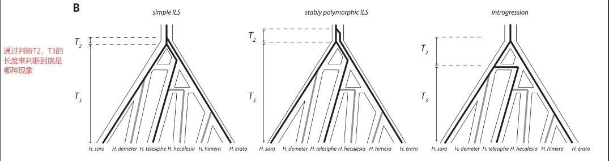
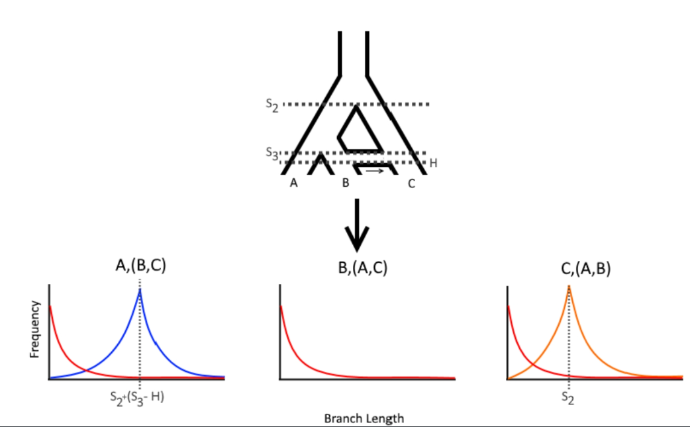
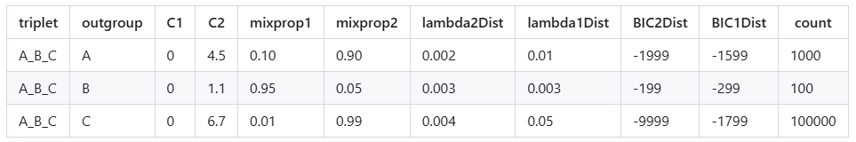

@Genomic architecture and introgression shape a butterfly radiation
QulBL最早发表于2019年的science文章，@Genomic architecture and introgression shape a butterfly radiation，用于研究蝴蝶中的基因交流现象。基本原理是通过计算由3个tips组成的subtrees结构中枝长的长短来判断该结构中ILS和基因流发生的概率，要点如下：
ILS中基因分化时间早于物种分化时间，所以以基因分化的视角来看，3个物种在较短的时间内同时出现，在系统发育树上表现为一个较短的内部枝长。以下图为例，即T2应该明显短于T3。在统计上若干三联体的枝长呈现一个指数级分布。
基因渐渗一般发生在物种形成之后。祖先基因在首次分化之后，间隔了较长的一段时间才发生了二次分化。在系统发育树上表现为一个较长的内部枝长。即渐渗的T2应该显著长于ILS的T2。在统计上若干三联体的枝长呈现一个类正态分布


要求python2.7的环境，所以先创建环境
conda create -n python2.7 python=2.7conda activate python2.7
同时需要安装特定版本的依赖包
xxxxxxxxxxconda install ete3==3.0.0b35conda install joblib==0.11
通过运行示例文件来判断是否配置成功
xxxxxxxxxxpython QuIBL.py ./Small_Test_Example/sampleInputFile.txt
QulBL运行较为简单，只需要准备两个文件
置根后的基因树合并文件，smallTestTrees.txt
配置文件，sampleInputFile.txt
配置文件示例如下：
x[Input]treefile: /genetrees.nwknumdistributions: 2likelihoodthresh: 0.01numsteps: 30gradascentscalar: 0.5totaloutgroup: outgroup_tipmultiproc: Truemaxcores:48[Output]OutputPath: ./res.csv
相关参数解释如下，一般使用默认参数就好，需要变动的主要参数为treefile 和totaloutgroup
xxxxxxxxxxtreefile: The path to the trees to be analyzed.numdistributions: The number of branch length distributions in the mixture to test. For now, only two is supported (this corresponds to one ILS and one non-ILS distribution).likelihoodthresh: The maximum change in likelihood allowed for the gradient ascent search for theta to stop.numsteps: The number of total EM steps. For thousands of trees, we reccomend trying around 50.gradascentscalar: The factor to shrink the stepsize when a gradient ascent step fails.totaloutgroup: The name of the ultimate outrgroup of your sample. All trees are assumed to be rooted using this taxon.multiproc: Accepts `True` or `False` and either turns multiprocessing on or off.OutputPath: Where the output gets written.maxcores: The maximum number of cores QuIBL is allowed to use.
基因树文件，建议基因树的tips label不要带下划线“_“，因为最终结果中会以下划线来分隔每个三分的物种，容易造成混淆。同时值得注意的是基因树文件配置有两条思路，分别对应不同的情况
1）基因树文件中不存在样本缺失，所有的基因树都包含所有的取样，此时只需要直接运行如下代码即可：
xxxxxxxxxxpython /QuIBL-master/QuIBL.py sampleInputFile.txt
2）基因树文件中存在样本缺失，此时流程较为复杂，需要通过提取子树来避免有样本缺失的问题，流程如下： 涉及到如下几个主要步骤：
01_comb_4spes.py，通过物种树来提取所有可能的三物种组合
02_extract_subtree_for_4spes.py，抽取所有的四物种组合树，多出的一个物种为外类群
去除祖先节点序号，生成配置文件sampleInputFile.txt
批量运行QulBL并合并全部结果
具体代码流程如下： 01_comb_4spes.py
xxxxxxxxxx# coding=utf-8from itertools import combinationsfrom ete3 import Tree# 给定的元素elements = ['aawi', 'acer', 'acyt', 'adig', 'aflo', 'ahya', 'aint', 'amic', 'amil', 'amur', 'anas', 'apal', 'asel', 'aten', 'ayon']# 提取三个元素为一组combs_3 = list(combinations(elements, 3))# 每组加上'outgroup'形成四个元素combs_4 = [(comb[0], comb[1], comb[2], 'outgroup') for comb in combs_3]# 将每个组合写入文件中，每行一个组合with open('out_four_species_array.txt', 'w') as file:for comb in combs_4:file.write(' '.join(comb) + '\n')
02_extract_subtree_for_4spes.py
xxxxxxxxxx# coding=utf-8from ete3 import Treefile_path = 'out_four_species_array.txt'b = 1with open(file_path, 'r') as file:# 逐行读取四物种组合for line in file:subtree_taxa = line.strip().split(' ')result_array = []# 打开树文件with open('alltree.rooted.txt', 'r') as treefile:for treeline in treefile:t = Tree(treeline)# 获取该树的所有叶子名leaf_names = set(t.get_leaf_names())# 如果当前组合不完全包含在树中，跳过if not all(tip in leaf_names for tip in subtree_taxa):continue# 提取子树t.prune(subtree_taxa, preserve_branch_length=True)a = t.write()result_array.append(a)# 如果有提取到子树，写入文件if result_array:filename = "out_subtree_" + str(b) + ".txt"with open(filename, 'w') as outfile:for element in result_array:outfile.write(element + '\n')b += 1
产生多个4物种组合的基因树文件，对其进行处理，将祖先节点的序号去掉
xxxxxxxxxxsed -i 's/)\([0-9]*\):/):/g' out_subtree_*
批量产生sampleInputFile.txt文件，注意修改路径和outgroup：
xxxxxxxxxxfor file in `ls out_subtree*`; doecho -e "[Input]\ntreefile: ./$file\nnumdistributions: 2\nlikelihoodthresh: 0.01\nnumsteps: 50\ngradascentscalar: 0.5\ntotaloutgroup: mcap\nmultiproc: True\nmaxcores:70\n\n[Output]\nOutputPath: ./out$file.csv\n"> ./run$file.txt;done
03_run.sh，批量运行脚本
xxxxxxxxxx#构建批量运行的sh文件03_run.shfor file in `ls runout_subtree*`;doecho -e "python QuIBL.py ./$file";done > 03_run.sh#利用Parafly并行跑程序，该软件在python2和python3环境下均可以利用conda安装,注意调整CPU占用量ParaFly -c ./my_455_annalysis/03_run.sh -CPU 40
最终结果整合：
xxxxxxxxxxfor file in *.csv; dosed -n '2,$p' "$file" >> results_qulbl.txt;donesed -i '1i triplet,outgroup,C1,C2,mixprop1,mixprop2,lambda2Dist,lambda1Dist,BIC2Dist,BIC1Dist,count' results_qulbl.txt
xxxxxxxxxxValueError: math domain error
这个报错是由于L+=log(temp)中temp值的异常导致的数学运算错误。往上追溯会发现temp的异常是cArray=[nan, nan], lmbd=nan中的NAN导致的无法识别。NAN的异常又是由于脚本中在进行EM拟合时步长调节过度导致的，即在规定的步数内，步长太长跳过了最优值导致最终的λ发散或为负数而显示的异常。虽然代码中已有相关调节措施避免此类情况，但显然还是存在一定的bug。
EM 拟合的目标就是用混合分布模型，最大限度解释输入的分支长度数据，并估计这些数据是由 ILS 和 introgression 以何种比例产生的。
因此我们目前有两种思路去规避这个报错：
调参，调节参数避免出现这种问题
编译cython后使用作者的另一个脚本运行
减小gradascentscalar，这是控制 λ（lmbd）变化速度的因子，减小它能有效避免步长太大导致 λ 趋近 0 或负数，从而触发 NaN
提高 likelihoodthresh，减少陷入“震荡”区域的迭代次数
增加 numsteps，增加调节次数去避免NAN
值得注意的是，调节参数本身具有一定效果但不一定能完全适配所有数据。同时调参后会导致运行时间延长，也可能造成其它报错
作者提供了cython编译的另一个类似脚本可以解决上述报错，流程如下：
在创建的python2.7的环境下安装cython
xxxxxxxxxxconda install cython
编译cython，在下载的QulBL的安装文件中有帮助实现编译的文件，位置在QulBL/cython_vers/setup.py，同样的新的QulBL脚本也在该目录下，编译代码如下：
xxxxxxxxxxpython setup.py build_ext --inplace
编译完成后使用新的脚本QuIBL_cyth.py运行那些不能正常跑出结果的文件即可，示例如下：
xxxxxxxxxxpython QuIBL_cyth.py run.txt
让我们来简单分析一下最终结果，即你汇总的results_qulbl.txt文件中的结果。以下是GitHub中的一个例子，其物种树的拓扑为：(((A,B),C),D);

xxxxxxxxxxtriplet：所分析的三联体结构outgroup：以哪个tip为外群C1：仅ILS模型下分支的内部枝长，默认为0C2：双分布模型下的内部枝长，如果拓扑与物种树一致，反映两次物种分化事件之间的时间间隔。如果不一致，反映的是渗入事件与所有三个分支共祖之间的时间间隔mixprop1：ILS发生的概率比例mixprop2：渗入事件发生的概率比例lambda1Dist：仅ILS模型下的拓扑枝长缩放比例，可以理解为标准化枝长使得它可以用于检测ILS和渐渗lambda2Dist：同上，但是双模型BIC1Dist：仅ILS模型下的贝叶斯得分,通常 BIC 差值 >10 被认为显著支持BIC2Dist：混合模型下的贝叶斯得分，越小越好count：此拓扑在输入的所有拓扑中出现的次数
部分解释可能存疑，如C1/2和lambda的解释
根据如上解释，我们可以发现，当C为外类群时，拓扑与物种树一致，此时判断基因树物种树一致，不参与总体的ILS/渐渗的测评中。即我们认为对于所有位点而言，有0.9*1000/(1000+100+10000)=0.89%的位点是由于渐渗导致的物种树与基因树不一致，而只考虑与物种树不一致的位点的话，这个概率来到了81%
1）如何计算两个物种间的渐渗概率，基于此需了解以下几点
两个物种广泛存在于不同的三联体中，如何计算这两个物种间的渐渗概率，教程中的两种算法最终得出的结果有哪些区别
是否考虑概率计算是基于哪个模型（ILS混合还是仅ILS）做出的
是否考虑显著性
2）如何得出不同三联体的内部枝长分布频率
数值如何计算 √
如何根据数据直方图拟合出两种模型的最适曲线 √
3）ILS的概率如何计算
是否可以基于渐渗的算法直接替换